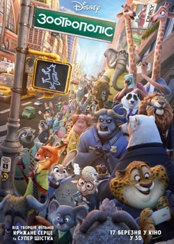
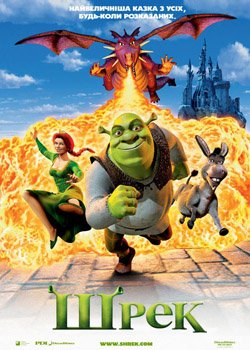

На цьому сайті зібрано найкращі фільми й мультфільми за усю історію кінематографу.Кіно для перегляду з сім'єю, друзями чи самому. Будь-що на будь-який смак!
Жанр:Бойовик, Пригоди, Фантастика
Тривалість:143 хв
Країна:США, Австралія
Актори:Джейсон Момоа, Ембер Герд, Патрік Вілсон, Віллем Дефо, Ях'я Абдул-Матін II, Ніколь Кідман, Дольф Лундгрен, Грем Мактавіш, Рендолл Парк
Сюжет:Головний герой фантастичного фільму «Аквамен» - Артур Каррі, батько якого десятиліттями був відданим працівником маяка. Саме там батько, незважаючи на своє самітництво, став свідком незрозумілих явищ. І там же він зустрів прекрасну Атланну, яка стала головною любов'ю всього його життя. Результатом їх союзу стала поява на світ Артура. Каррі молодший ріс і з раннього дитинства відчував у собі неймовірну силу. Він не міг її пояснити і тому боявся будь-яких її проявів. Але через деякий час Артур навчився контролювати свої здібності. Він став швидко пересуватися, навчився переміщувати важкі предмети, вага яких здається для звичайної людини неймовірною. А пізніше Артур зміг навчитися перебувати під водою необмежений час і навіть спілкуватися з підводними мешканцями океану. Тоді він дізнався, що його мати була справжньою правителькою великої Атлантиди. Її вигнали багато років тому, але вона пообіцяла, що її син рано чи пізно займе місце правителя семи морів.
Жанр:Бойовики, Комедії, Пригоди, Фентезі
Тривалість:119 хв
Країна:США
Актори:Карен Гіллан, Двейн Джонсон, Боббі Каннавале, Міссі Пайл, Джек Блек, Кевін Харт, Мерібет Монро, Різ Дербі, Алекс Вулф, Нік Джонас
Сюжет:Четверо підлітків вирішили пограти у стару комп'ютерну гру під назвою «Джуманджі», про яку раніше ніхто з них не чув. Тільки ось після вибору персонажів щось пішло не так, і хлопчики й дівчатка перемістилися у гру, перетворившись у своїх персонажів - шукача пригод, коротуна, старого професора і неймовірно красиву амазонку. Всі вони потрапили у жахливо небезпечний світ джунглів, де померти дуже легко. Вони повинні діяти разом, щоб знайти дорогу додому з цієї жахливої гри ...
Жанр:Драма, Мелодрами
Тривалість:132 хв
Країна:США
Актори:Шейлін Вудлі, Енсела Елгорт, Лора Дерн, Сем Треммелл, Нат Вулф, Віллем Дефо, Лотте Вербеєк, Ана Справи Крус, Ренді Ковіц, Тоні Саладна
Сюжет:Екранізація однойменного роману Джона Гріна. Хейзел - 17-річна дівчина вже кілька років страждає однією з найважчих форм онкологічних захворювань. Але ось відбувається подія, яка повністю перевертає її життя - вона закохується в Августа, хлопця з групи підтримки. На тлі страшного діагнозу - в серцях молодих людей починають прокидатися перші ніжні почуття ...
Жанр:Комедії, Мелодрами
Тривалість:102 хв
Країна:Німеччина, Велика Британія
Актори:Лілі Коллінз, Сем Клафлін, Арт Паркінсон, Темзін Еджертон, Крістіан Кук, Сукі Вотерхаус, Джемі Вінстон, Лілі Лейт, Норма Шихан, Джейк Менлі
Сюжет:Алекс і Розі - кращі друзі, мріють вступити до престижного американського університету. Але несподівано Алекс змушений виїхати разом з сім'єю в Дублін. Закохані вирішують провести разом першу ніч. Однак обставини складаються так, що Алекс не може прийти на зустріч з подругою. В розпачі Розі напивається, і її першим чоловіком стає Брайан. Випадковий зв'язок ставить хрест на її подальшому житті, адже 18-річна дівчина вагітніє ...
Жанр:Бойовики, Комедії, Кримінал, Пригоди
Тривалість:128 хв
Країна:Велика Британія
Актори: Колін Ферт, Семюел Л. Джексон, Майкл Кейн, Терон Еджертон, Марк Стронг, Марк Хемілл, Софія Бутелла, Софі Куксон, Джек Девенпорт, Том Прайор
Сюжет:Молодий марнотратник життя Еггзі отримує другий шанс: друг батька запропонував йому спробувати сили в секретній організації «Кінгсмен». Її агенти носять тільки кращі костюми, поводяться як справжні джентльмени і носять імена на честь лицарів короля Артура. Вони користуються фантастичними гаджетами і регулярно рятують світ. Щоб стати одним з таких щасливчиків, Еггзі повинен пройти суворий відбір і витримати жорстокі випробування ...
Жанр: Комедії, Мелодрами
Тривалість: 88 хв
Країна: США
Актори:Кейт Хадсон, Енн Гетевей, Брайан Грінберг, Кріс Пратт, Стів Хоуі, Кендіс Берген, Крістен Джонстон, Майкл Арден, Віктор Слезак, Келлі Коффілд
Сюжет:Емма і Лів нерозлучні подружки. З дитинства вони мріяли вийти заміж в одному і тому ж прекрасному місці. Склалося так, що весілля подружок були призначені на один день, що призвело до неминучої сварки.І почалася запекла боротьба.
Жанр: Драма, Комедії, Мелодрами
Тривалість:107 хв.
Країна:США
Актори:Сандра Баллок, Райан Рейнольдс, Марі Стінбурґен, Бетті Вайт, Деніс О’Харе, Малін Акерман
Сюжет:Ендрю Пекстон давно мріє про посаду редактора у великому видавництві, в якому він працює всього лише помічником жорсткої і деспотичної Маргарет Тейт. Але, здається, доля посміхається йому. Маргарет - громадянка Канади, і коли її робоча віза закінчується, їй загрожує депортація на батьківщину. Вона не має наміру втрачати хорошу роботу, і вигадує план - Ендрю повинен одружитися на ній ...
Жанр:Комедії
Тривалість:106 хв
Країна:США
Актори: Кетрін Гейґл, Джеймс Марсден, Едвард Бернс, Малін Акерман, Крістен Ріттер
Сюжет:Одного разу дівчинка на весіллі виручила свою тітку, а саме прив'язала їй поділ сукні, який у неї відірвався, бантом молодшої сестри. І з тих пір вона зрозуміла, що організатор весіль - її покликання до кінця днів на цій землі.
Жанр:Комедії, Спортивні
Тривалість:110 хв
Країна:США
Актори: Двейн Джонсон, Медісон Петтіс, Кіра Седжвік, Розелін Санчез, Морріс Честнат, Хейес МакАртур, Брайан Дж. Вайт, Джамал Дафф, Пейдж Турко, Таббс
Сюжет:Головний герой - зірка американського футболу Джо Кінгман. Великі гроші і слава припадають йому до душі. Він звик жити на повну котушку, думаючи лише про себе. Але раптом до Джо приїжджає донька, яку він ніколи не бачив. І тепер переконаному холостяку і егоїсту доводиться змінити свій спосіб життя ...
Жанр: Мелодрами, Комедії
Тривалість:111 хв.
Країна:США, Німеччина
Актори:Кейт Хадсон, Метью МакКонахю, Кетрін Хан, Анні Парісс, Адам Голдберг, Томас Леннон, Мішель Мішель, Шалом Харлов, Роберт Клейн, Бебе Нойвірт.
Сюжет:Журналістка Енді Андерсон з журналу отримує досить незвичайне редакційне завдання, яке до того ж треба зробити дуже швидко. Вона мусить написати статтю про те, що вигадують жінки для того, щоб звільнитися від чоловіка, коли вони його більше не хочуть бачити поруч. На все про все в неї тільки 10 днів, через які матеріал повинен лежати на столі головного редактора. Їй необхідно знайти в натовпі хлопця, закохати в себе, а потім вчинити всі класичні викрутаси примхливої красуні. На біду Енді, її вибір припав на молодого рекламного агента Бенджаміна Беррі, який сам якраз уклав зі своїм босом парі, що він зможе закохати в себе дівчину за 10 днів. Чи може таке дивне знайомство, засноване на авантюрі і замішане на брехні, привести до взаємності?
Жанр: Мультфільм
Тривалість:107 хв
Країна:США, Канада, Німеччина
Актори: Скарлет Йоганссон, Терон Еджертон, Меттью МакКонахі, Різ Візерспун, Нік Офферман, Леслі Джонс, Сет Макфарлейн, Джон Сі Рейлі, Дженніфер Сондерс, Пітер Серафіновіч, Торі Келлі, Лаура Дікінсон, Джонні Холл
Сюжет:Керівник місцевого театру коала Бастер Мун, щоб поправити свої фінансові справи, вирішує організувати пісенний конкурс, виступити в якому може кожен бажаючий. Разом зі своїм найкращим другом Едді він починає підготовку до грандіозного шоу. Все місто дізнається про відкритий конкурс талантів, який затіяв Бастер. Найрізноманітніші звірі прямують на кастинг, в надії дійти до фіналу і виграти омріяний приз ...
Жанр:Мультфільм
Тривалість:86 хв
Країна:США
Актори:Луїс С.К., Ерік Стоунстріт, Кевін Харт, Дженні Слейт, Еллі Кемпер, Лейк Белл, Тара Стронг, Альберт Брукс, Джим Каммінгс, Геннібал Бёресс
Сюжет:Дія мультфільму відбувається в багатоквартирному будинку на Манхеттені. Життя тер'єра Макса, улюбленого вихованця, кардинально змінюється, коли його господиня Кеті приносить додому неохайну дворняжку на ім'я Дюк, яку вона забрала з притулку. Але Макс і Дюк повинні забути про сварки, дізнавшись, що білий кролик Сніжок - ватажок армії тварин, викинутих на вулицю, хоче помститися всім домашнім вихованцям та їх господарям ...

Жанр:Мультфільм
Тривалість:108 хв
Країна:США
Актори:Ідріс Ельба, Джинніфер Ґудвін, Джейсон Бейтман, Алан Тьюдік, Дж.К. Сіммонс, Дженні Слейт, Октавія Спенсер, Бонні Хант, Кеті Лоус, Джон Ді Маджіо
Сюжет:Мешканці сучасного великого міста Зоотрополіс - найрізноманітніші звірі. Вони спілкуються між собою, ходять на роботу і заводять сім'ї. Головний герой - лис на ім'я Нік Вайлд. Він затриманий за злочин, який насправді не скоював. Ніка починає переслідувати поліцейська кролиця Джуді Хопс, яка підходить до своєї роботи максимально відповідально. Несподівано герої дізнаються, що опинилися в самому центрі змови, і тепер їм двом доведеться знайти того, хто за цим стоїть?
Жанр:Мультфільм
Тривалість:94 хв
Країна:CША
Актори:Дайан Лейн, Прісцилла Барнс, Кайл МакЛоклен, Мінді Кейлінг, Білл Хейдер, Філліс Сміт, Льюїс Блек, Кейтлін Діас, Періс Ван Дайк
Сюжет:Дія захоплюючої історії, відбуватиметься у думках одинадцятирічної дівчинки Райлі. Дорослішати головній героїні зовсім не хочеться. Нещодавно батько отримав нове призначення по службі, і їх родині довелося переїхати у Сан-Франциско. У цей складний період адаптації в незнайомому оточенні, дівчинкою керують п'ять найсильніших людських емоцій - Радість, Страх, Роздратування, Злість і Огида. Вони живуть у центрі її контролю і керують свідомістю дівчинки. Саме вони спробують провести Райлі по життю ...
Жанр:Мультфільм
Тривалість:91 хв
Країна:США
Актори: Адам Сендлер, Енді Семберг, Селена Гомес, Кевін Джеймс, Френ Дрешер, Стів Бушемі, Моллі Шеннон, Девід Спейд, Сі-Ло, Джон Ловіц
Сюжет:У очолюваний Дракулою притулок для нечисті проникає земний хлопчик. Після того, як він закохується в юну дочку графа, Дракула перетворюється в нестерпно турботливого батька ...
Жанр:Мультфільм
Тривалість:93 хв
Країна:США
Актори:Емма Томпсон, Келлі Макдоналд, Кевін МакКідд, Роббі Колтрейн, Джулі Волтерс, Крейг Фергюсон, Біллі Конноллі, Джон Ратценбергер
Сюжет:Шотландська принцеса Меріда мріє стати великою лучницею, чим, зрозуміло, вкрай незадоволені її батьки. Після чергового конфлікту з матір'ю принцеса приймає необачне рішення, яке може коштувати її батькові королівства, а її матері - життя.
Жанр:Мультфільм
Тривалість:101 хв
Країна:США
Актори:Джон Сі Рейлі, Алан Тьюдік, Джейн Лінч, Рейчел Гарріс, Ед О `Ніл, Денніс Гейсберт, Джек МакБрайер, Кайл Геберт, Джемі Елман, Сара Сілверман, Стефані Скотт, Мінді Калінга
Сюжет:Негативний персонаж відеогри, що мріє про кохання і повагу, намагається стати «хорошим хлопцем». Однак перш ніж йому це вдасться, герою доведеться подолати безліч непростих випробувань ...
Жанр:Мультфільм
Тривалість:91 хв
Країна:США
Актори:Стів Карелл, Рассел Бренд, Джейсон Сегел, Кен Жонг, Вілл Арнетт, Денні МакБрайд, Джулі Ендрюс, Міранда Косгров, Крістен Віг
Сюжет:Найбільша єгипетська піраміда вкрадена, а на її місці стоїть муляж. Тепер лиходій підземелля готує супер крадіжку, він хоче заволодіти Місяцем ...
Жанр:Мультфільм
Тривалість:100 хв
Країна:США, Австралія
Актори:Альберт Брукс, Елен ДеҐенерес, Александр Ґулд, Віллем Дефо, Бред Геррет, Еллісон Дженні, Остін Пендлтон, Стівен Рут, Віккі Льюїс, Джо Ренфт, Джеффрі Раш
Сюжет:Після нападу хижої риби, Марлін втратив дружину і безліч ікринок, із яких згодом повинні були вирости його діти. У нього залишився лише один синочок - і сьогодні, через багато років, Немо вперше йде до школи. Але будучи вельми неслухняною дитиною, він запливає занадто далеко, в заборонену для маленьких риб територію ...

Жанр:Мультфільм
Тривалість:89 хв
Країна:США
Актори:Майк Майерс, Едді Мерфі, Кемерон Діаз, Джон Літгоу, Венсан Кассель, Пітер Денніс, Клайв Пірс, Джим Каммінгс, Боббі Блок, Кріс Міллер
Сюжет:В одному казковому королівстві спокійно собі жив, на болотах, зелений велетень Шрек. Але одного разу, король-деспот засилає на болота всіх мешканців королівства. Спокійному життю велетня приходить кінець. Шреку нічого не залишається, як йти до королівського маєтку і домовлятись. Йому вдається укласти з королем угоду: Шрек звільняє для нього гарну принцесу від злого дракона, а король натомість повертає всіх жителів в свої будинки. Але, звільнивши принцесу, Шрек в неї закохується і принцесі він зовсім не байдужий. І що тепер робити?..